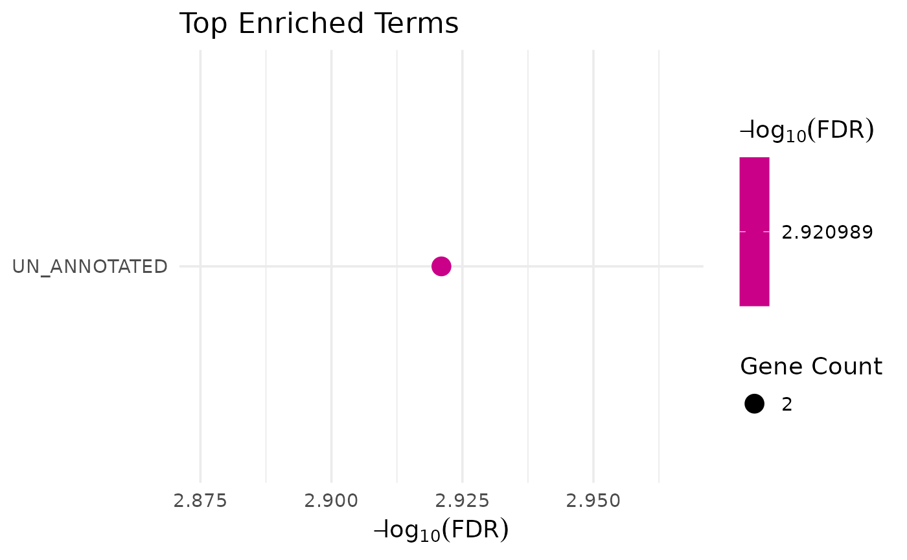

Run MSigDB enrichment directly from a VISTA comparison
Source:R/functional_analysis.R
get_msigdb_enrichment.RdConvenience wrapper that pulls regulated genes from a stored differential
expression comparison in a VISTA object and runs enrichMsigDB() on them.
Usage
get_msigdb_enrichment(
x,
sample_comparison,
regulation = c("Up", "Down", "Both", "All"),
from_type = "SYMBOL",
orgdb,
msigdb_category = "H",
msigdb_subcategory = NULL,
species = "Mus musculus",
background = NULL,
col_genetype = "GENETYPE",
feature_type = "protein-coding",
...
)Arguments
- x
A
VISTAobject with DE results inmetadata(x)$de_results.- sample_comparison
Character scalar naming the comparison to use.
- regulation
One of
"Up","Down","Both", or"All"; selects which genes to send to enrichment.- from_type
Identifier type of the genes in the DE table (passed to
enrichMsigDB(), default"SYMBOL"). Ensembl versions are stripped automatically.- orgdb
An
OrgDbobject used for ID conversion (passed through). If omitted, the default is chosen fromspecies(mouse/human).- msigdb_category
MSigDB category (e.g.,
"H","C2","C5"). Default"H".- msigdb_subcategory
Optional MSigDB sub-collection. Default
NULL.- species
Species name for MSigDB (default
"Mus musculus").- background
Optional background gene set (passed to
enrichMsigDB()). DefaultNULLuses all features inx(optionally filtered byfeature_type).- col_genetype
Column in
rowData(x)used to filter background by gene type. Default"GENETYPE".- feature_type
Gene type to retain in the background when filtering. Default
"protein-coding".- ...
Additional arguments forwarded to
enrichMsigDB().
Examples
if (requireNamespace("msigdbr", quietly = TRUE)) {
vista <- example_vista()
comp <- names(comparisons(vista))[1]
msig <- get_msigdb_enrichment(
vista,
sample_comparison = comp,
regulation = "Both",
msigdb_category = "H",
from_type = "ENSEMBL"
)
class(msig$enrich)
}
#> Warning: qvalue::qvalue() failed, returning NA for qvalue. Error: missing values and NaN's not allowed if 'na.rm' is FALSE
#> [1] "enrichResult"
#> attr(,"package")
#> [1] "enrichit"
# \donttest{
# Create VISTA object
data("count_data", package = "VISTA")
data("sample_metadata", package = "VISTA")
vista <- create_vista(
counts = count_data[seq_len(200), ],
sample_info = sample_metadata[seq_len(6), ],
column_geneid = "gene_id",
group_column = "cond_long",
group_numerator = "treatment1",
group_denominator = "control"
)
#> estimating size factors
#> estimating dispersions
#> gene-wise dispersion estimates
#> mean-dispersion relationship
#> final dispersion estimates
#> fitting model and testing
comp <- names(comparisons(vista))[1]
# Run MSigDB enrichment on upregulated genes
msig_up <- get_msigdb_enrichment(
vista,
sample_comparison = comp,
regulation = "Up",
msigdb_category = "H", # Hallmark gene sets
from_type = "ENSEMBL"
)
#> Warning: qvalue::qvalue() failed, returning NA for qvalue. Error: missing values and NaN's not allowed if 'na.rm' is FALSE
if (!is.null(msig_up$enrich)) {
# View results
head(msig_up$enrich)
# Visualize enrichment
get_enrichment_plot(msig_up$enrich)
}

# Enrichment for downregulated genes
msig_down <- get_msigdb_enrichment(
vista,
sample_comparison = comp,
regulation = "Down",
msigdb_category = "C2" # Curated gene sets
)
#> Warning: qvalue::qvalue() failed, returning NA for qvalue. Error: missing values and NaN's not allowed if 'na.rm' is FALSE
# }